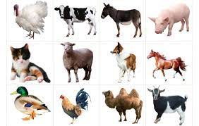
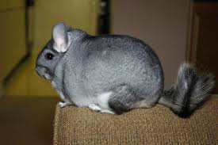

Общая информация


Часть домашних животных (сельскохозяйственные животные) приносит непосредственную материальную выгоду человеку, например, являясь источником пищи (молоко, мясо),
материалов (шерсть, кожа).
Другие животные (рабочий скот и служебные животные) приносят пользу человеку, выполняя рабочие функции (перевозка грузов, охрана и т. п.).
Вторая большая категория — это животные-компаньоны, которые занимают досуг, доставляют удовольствие и с которыми можно общаться.
Для городских жителей понятие «домашние животные» чаще ассоциируется со второй категорией, то есть с «домашними любимцами (питомцами)».
Многие семьи, которые держат дома каких-нибудь животных, отмечают, что эти животные создают уют, успокаивают, снимают стресс.
Cледует учитывать, что животные одной и той же породы могут нередко использоваться в различных целях.
Например, кто-то разводит кроликов для заготовки мяса и меха, а кто-то держит кролика дома как любимчика.
Некоторые отходы жизнедеятельности животного-компаньона можно использовать в качестве незначительного производственного сырья.
Так, от длинношёрстной собаки, а также кошки или кролика, можно собирать некоторое количество шерсти и использовать для вязки тёплой одежды для себя или членов семьи.
Перья домашних птиц используют для декоративных поделок и изобразительного искусства.
Домашние животные могут содержаться в специальных помещениях (скотный двор, конюшня, собачья будка), но могут жить и непосредственно в доме человека.
Из тех животных, которые живут в доме, одних содержат в клетках, аквариумах, террариумах и других «домиках»,
а другим (например, кошкам, собакам, кроликам) разрешают свободно перемещаться по помещению.
Домашние животные в развитых странах питаются, в основном, коммерчески созданными кормами из специально подобранных компонентов.
Это комбикорма для сельскохозяйственных животных, кошачьи или собачьи корма. Данные корма не только удобны в использовании, но и обеспечивают животное всеми необходимыми веществами.
Однако для ряда домашних животных, в частности большинства земноводных и рептилий, такие корма не подходят.
Их рацион в домашних условиях должен быть максимально приближен к естественному. Кроме домашних животных в доме могут находиться и нежелательные жильцы — домовые животные.
Они селятся в жильё или около жилья человека без приглашения, не принося никакой пользы и подчас доставляя много вреда. Это, например, крысы, мыши, тараканы, муравьи, кошки.
Домовые животные входят в более обширную группу синантропных животных, обитающих вблизи жилища человека.
На главную